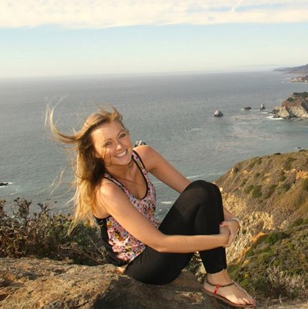

About Me

I grew up in San Diego, California, where I spent most of my childhood playing outside. But it was also a time of great technological innovation. Starting with the AOL dial-up in the 4th grade, alias "Onesurfergirl", I entered the internet world. I've enjoyed the connection and seemingly limitless possibilities computers and the internet provide.
I enjoy creating, writing, designing, and innovating. I find those seemingly limitless possibilities in Web Development, which I'm currently studying. As someone who is always looking to learn something new, I've found there is always something to learn, grow, and create in Web Development.
During my free time, I enjoy reading, traveling, and listening to music. I currently reside in beautiful Boulder, Colorado, where there is also plenty to outdoors!